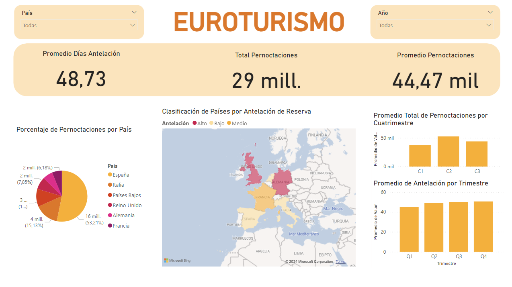

Usando Power BI, creé cuatro paneles cubriendo demografía de los empleados, experiencia laboral, localización y más. Esta información ayuda al equipo de RRHH a entender las razones tras el abandono de los empleados. 💡

Usando Excel y Power BI, me adentré en los datos de ventas, descubriendo tendencias, analizando patrones y ayudando al equipo de ventas con conociminetos para tomar unas decisiones más informadas. 📊

Usando RStudio, estos descubrimientos son esenciales para entender las estrategias de plan de negocio, ajustando servicios y tarifas según la demanda estacional. 🚆

Usando Rmarkdown, este trabajo enfatiza la necesidad de entender y abordar las fluctuaciones del turismo para tomas decisiones informadas, tal como la mejora de infraestructuras para el turismo en caravanas y cámpings, e implementando políticas de marketing para atraer a un mayor número de visitantes al país. 🗺️

Usando Power BI, mi equipo y yo participamos en un datathon que duró 4 horas organizado por Economia DataTech y Visit Valencia, el DataViz, donde limpiamos los datos provistos e hicimos un dashboard sobre el turismo europeo. 👩🏻💻

Usando RStudio, analicé las tendencias del turismo holandés y estimé las fluctuaciones con complejos modelos de predicción. 🚙